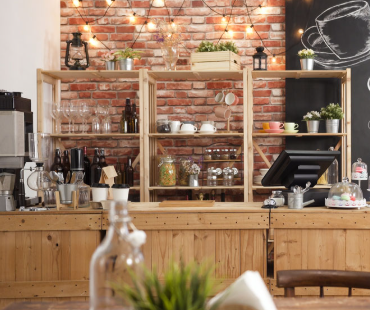

About Us
We started in 2024 and are located in Erbil-Enkawa, Iraq.
Cozy Corner Coffee Shop started with a simple idea — to create a warm, welcoming space where people can enjoy great coffee, relax, and connect. What began as a small dream has now become a local favorite, known for its rich brews, fresh pastries, and cozy atmosphere. Whether you're here to work, chat, or just unwind, we’re happy to serve you with a smile.
